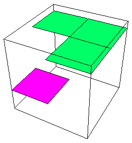
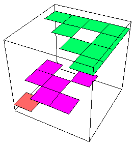
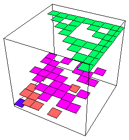
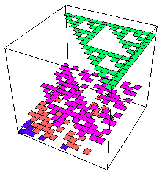
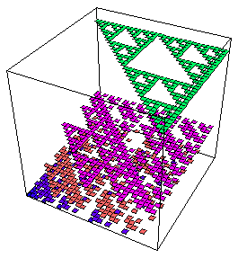
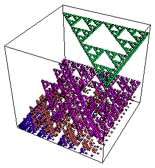

The walls of the boxes in the pictures in the last section obscure the intermediate values.
Here we show the same data (with two more iterates), but just the tops of the boxes.
So again the height represents the fraction of the points landing in that region.
|  |  |
|  |  |
|  |  |
In this case, an animation can emphasize the important observation that for all measures except the highest, some parts are lost and others addded at each iterstion.
| Click the picture to animate. |
Return to Multifractals.